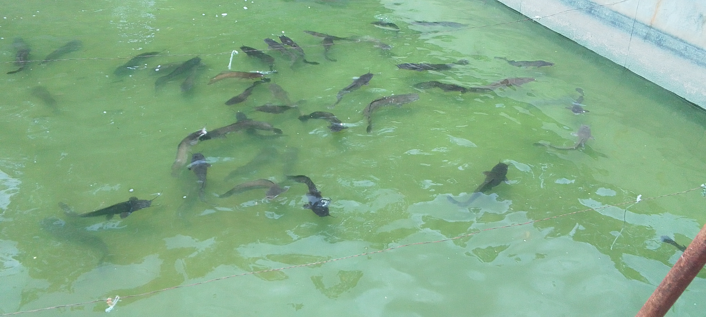
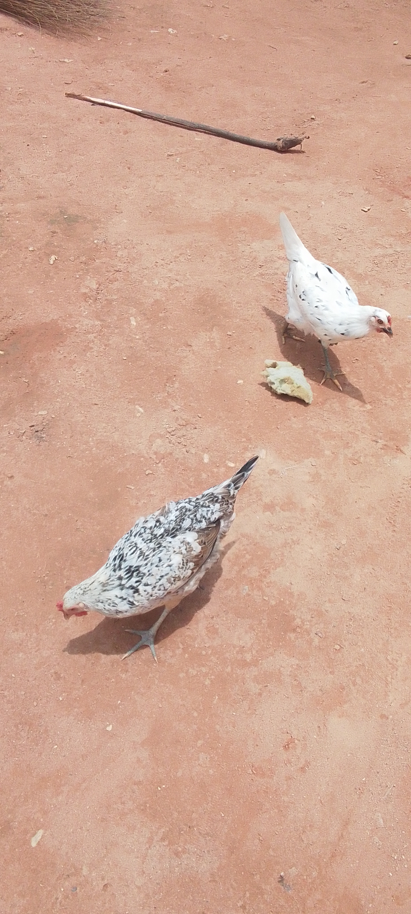
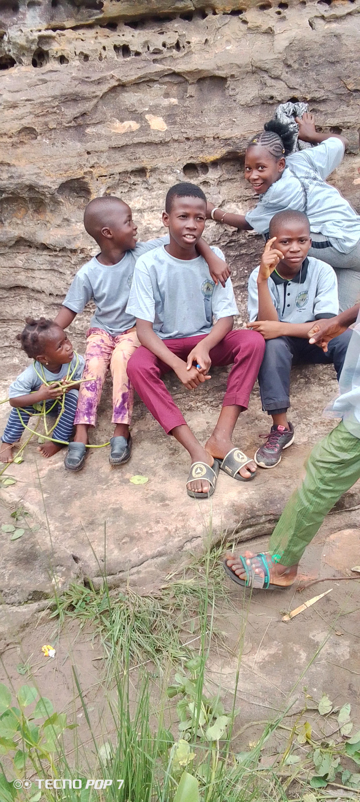

×

Cliquez sur une destination pour découvrir ses détails

Des chutes d'eau spectaculaires au cœur de la nature
Voir les détails
Formations rocheuses calcaires uniques au monde
Voir les détails
Des formations rocheuses mystérieuses et impressionnantes
Voir les détailsAjoutez vos propres photos en cliquant sur le bouton ci-dessous


Banfora est le cœur culturel de la région des Cascades. La ville est habitée principalement par les ethnies Karaboro, Gouin, Turka et Dioula, chacune apportant sa richesse culturelle.
La région est réputée pour ses traditions musicales, ses danses ancestrales et son artisanat. Le balafon et le djembé rythment les cérémonies traditionnelles.
Balafon, djembé et chants traditionnels
Danses rituelles et festives
Poteries, tissages et sculptures
Découvrez les saveurs authentiques de Banfora
Plat traditionnel à base de riz cuit avec de la viande et des légumes, épicé et savoureux.
Pâte de mil, maïs ou sorgho, accompagnée de sauces variées (gombo, arachide, feuilles).
Poisson frais du fleuve Comoé, grillé ou en sauce, spécialité de la région.
Banfora est célèbre pour ses mangues sucrées, ses ananas et ses agrumes.
Bière traditionnelle de mil, brassée localement et partagée lors des rassemblements.
Snacks sucrés et salés vendus dans les marchés et au bord des routes.
Contactez-nous pour organiser votre voyage
Nous contacter